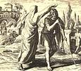

|
|
|
1 Samuel 10
|
|
| 10:1
Then Samuel took a vial of oil, and poured it upon his head, and kissed
him, and said, Is it not because the LORD hath anointed thee to be captain
over his inheritance? |
Samuel anoints Saul
(Julius Schnorr von Carolsfeld, 1851-60)
|
| 10:2
When thou art departed from me to day, then thou shalt find two men by
Rachel's sepulchre in the border of Benjamin at Zelzah; and they will say
unto thee, The asses which thou wentest to seek are found: and, lo, thy
father hath left the care of the asses, and sorroweth for you, saying, What
shall I do for my son?
|
| 10:3
Then shalt thou go on forward from thence, and thou shalt come to the
plain of Tabor, and there shall meet thee three men going up to God to
Bethel, one carrying three kids, and another carrying three loaves of bread,
and another carrying a bottle of wine: |
|
| 10:4
And they will salute thee, and give thee two loaves of bread; which thou
shalt receive of their hands. |
|
| 10:5
After that thou shalt come to the hill of God, where is the garrison of
the Philistines: and it shall come to pass, when thou art come thither to
the city, that thou shalt meet a company of prophets coming down from the
high place with a psaltery, and a tabret, and a pipe, and a harp, before
them; and they shall prophesy: |
|
| 10:6
And the Spirit of the LORD will come upon thee, and thou shalt prophesy
with them, and shalt be turned into another man. |
|
| 10:7
And let it be, when these signs are come unto thee, that thou do as
occasion serve thee; for God is with thee. |
|
| 10:8
And thou shalt go down before me to Gilgal; and, behold, I will come down
unto thee, to offer burnt offerings, and to sacrifice sacrifices of peace
offerings: seven days shalt thou tarry, till I come to thee, and shew thee
what thou shalt do. |
|
| 10:9
And it was so, that when he had turned his back to go from Samuel, God
gave him another heart: and all those signs came to pass that day. |
|
| 10:10
And when they came thither to the hill, behold, a company of prophets met
him; and the Spirit of God came upon him, and he prophesied among them. |
|
| 10:11
And it came to pass,
when all that knew him beforetime saw that, behold, he prophesied among the
prophets, then the people said one to another, What is this that is come
unto the son of Kish? Is Saul also among the prophets? |
 (10:12) "Is Saul also among the prophets?"
(10:12) "Is Saul also among the prophets?"
There are two stories for the origin of the famous proverb: "Is Saul also among the prophets?" I like the one in
19:24 better, though. (Saul lays around naked for a day in front of God and everybody.)
When did "Is Saul among the prophets?" become a proverb?
|
| 10:12
And one of the same
place answered and said, But who is their father? Therefore it became a proverb, Is Saul also among the prophets?
|
| 10:13
And when he had made an end of prophesying, he came to the high place. |
|
| 10:14
And Saul's uncle said unto him and to his servant, Whither went ye? And he
said, To seek the asses: and when we saw that they were no where, we came to
Samuel. |
|
| 10:15
And Saul's uncle said, Tell me, I pray thee, what Samuel said unto you. |
|
| 10:16
And Saul said unto his uncle, He told us plainly that the asses were
found. But of the matter of the kingdom, whereof Samuel spake, he told him
not. |
|
| 10:17
And Samuel called the people together unto the LORD to Mizpeh; |
Saul Becomes King
|
| 10:18
And said unto the children of Israel, Thus saith the LORD God of Israel, I
brought up Israel out of Egypt, and delivered you out of the hand of the
Egyptians, and out of the hand of all kingdoms, and of them that oppressed
you:
|
| 10:19
And ye have this day rejected your God, who himself saved you out of all
your adversities and your tribulations; and ye have said unto him, Nay, but
set a king over us. Now therefore present yourselves before the LORD by your
tribes, and by your thousands. |

 (10:19-21) "Ye have said ... set a king over us. Now therefore present yourselves
before the LORD by your tribes ... When Samuel had caused all the tribes of Israel to come near, the
tribe of Benjamin was taken ... the family of Matri was taken, and Saul the son of Kish was taken." (10:19-21) "Ye have said ... set a king over us. Now therefore present yourselves
before the LORD by your tribes ... When Samuel had caused all the tribes of Israel to come near, the
tribe of Benjamin was taken ... the family of Matri was taken, and Saul the son of Kish was taken."
Samuel called the Israelites together and selected their king by lot. First the tribe of Benjamin was selected, then the family of
Matri, and then Saul.
Does the Bible condemn gambling?
|
| 10:20
And when Samuel had caused all the tribes of Israel to come near, the
tribe of Benjamin was taken.
|
| 10:21
When he had caused the tribe of Benjamin to come near by their families,
the family of Matri was taken, and Saul the son of Kish was taken: and when
they sought him, he could not be found.
|
| 10:22
Therefore they enquired of the LORD further, if the man should yet come
thither. And the LORD answered, Behold he hath hid himself among the
stuff. |
(10:22) "Behold, he hath hid himself among the stuff."
When the people couldn't find Saul (who was selected to be king by drawing lots), they "enquired
of the Lord ... and the Lord answered, "Behold he hath hid himself among the
stuff."
(10:23) "When he stood among the people, he was higher than any of the people
from his shoulders and upward."
Saul literally stood head and shoulders above any other person in Israel. (He was also the best looking.)
|
| 10:23
And they ran and fetched him thence: and when he stood among the people,
he was higher than any of the people from his shoulders and upward.
|
| 10:24
And Samuel said to all the people, See ye him whom the LORD hath chosen,
that there is none like him among all the people? And all the people
shouted, and said, God save the king.
|
| 10:25
Then Samuel told the people the manner of the kingdom, and wrote it in a
book, and laid it up before the LORD. And Samuel sent all the people away,
every man to his house. |
(10:25) "Then Samuel told the people the manner of the kingdom, and wrote it in a
book."
(Another lost book of the Bible.)
|
| 10:26
And Saul also went home to Gibeah; and there went with him a band of men,
whose hearts God had touched. |
|
| 10:27
But the children of Belial said, How shall this man save us? And they
despised him, and brought no presents. But he held his peace. |
(10:27) "But the children of Belial said, How shall this man save us? And they
despised him, and brought no presents."
|
|


{kind=link}